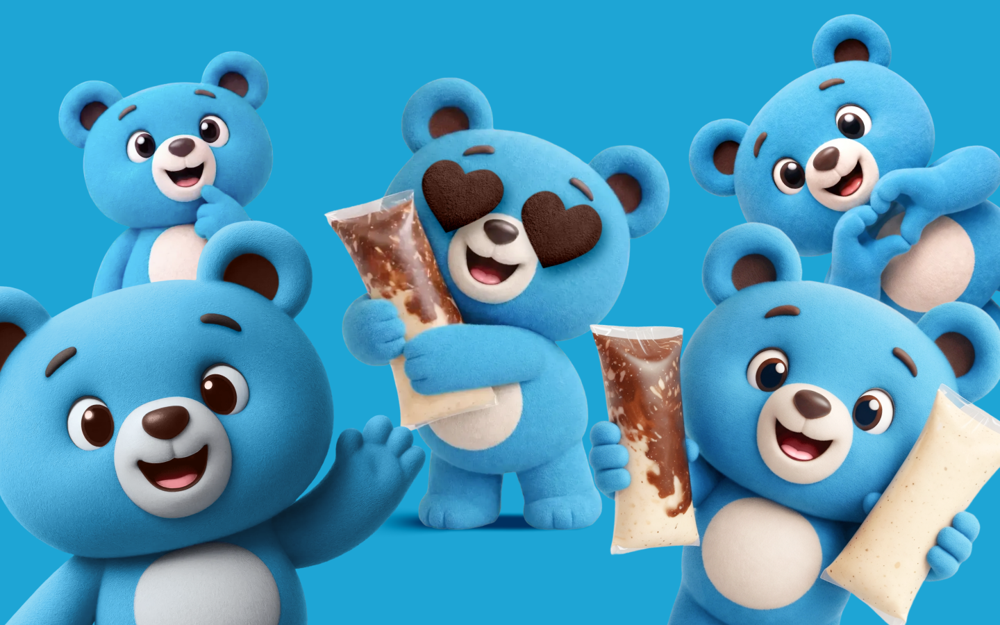
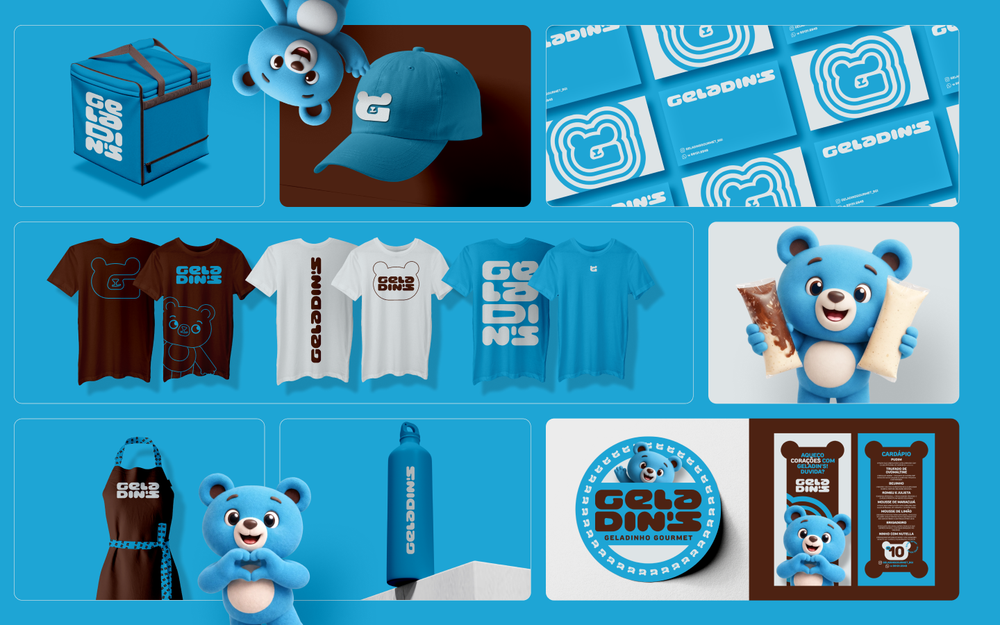
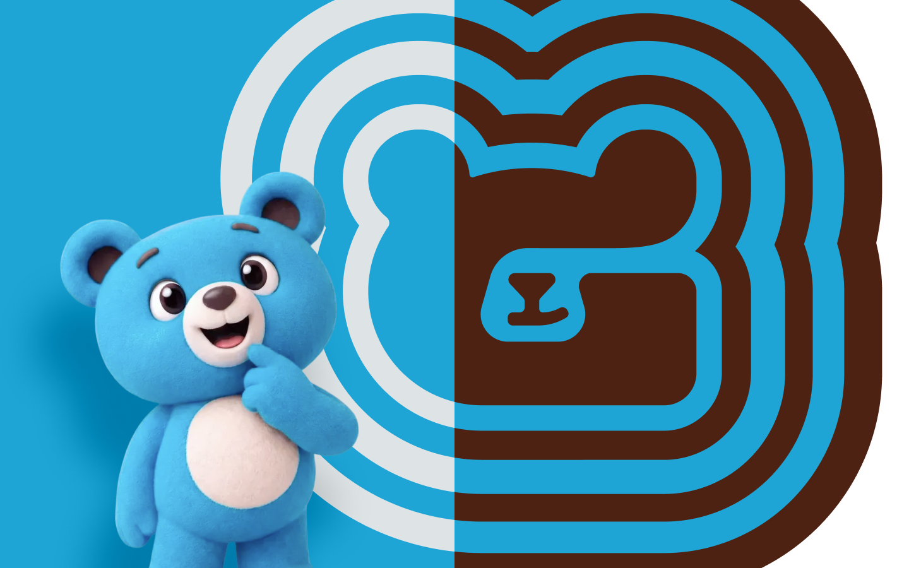
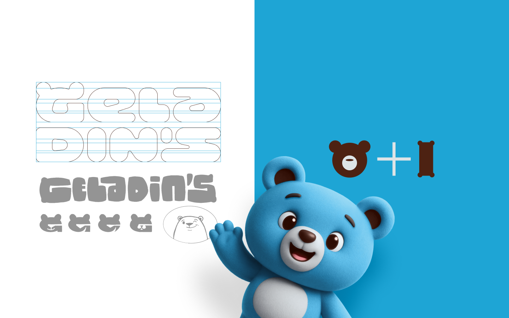
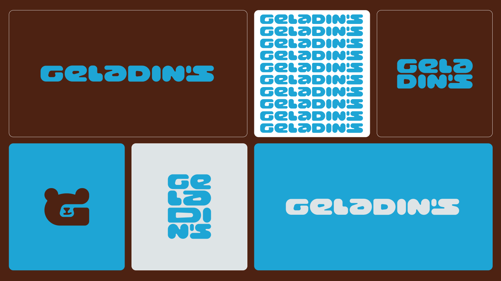
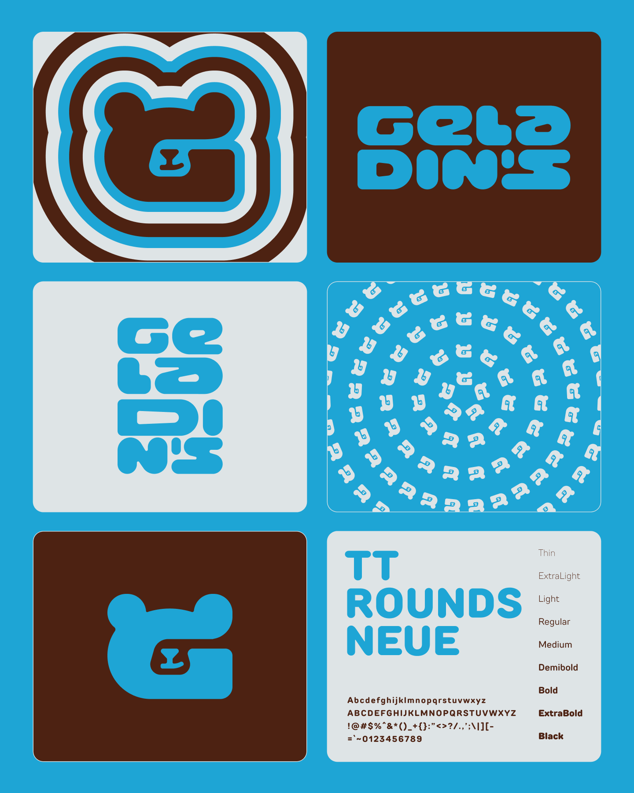
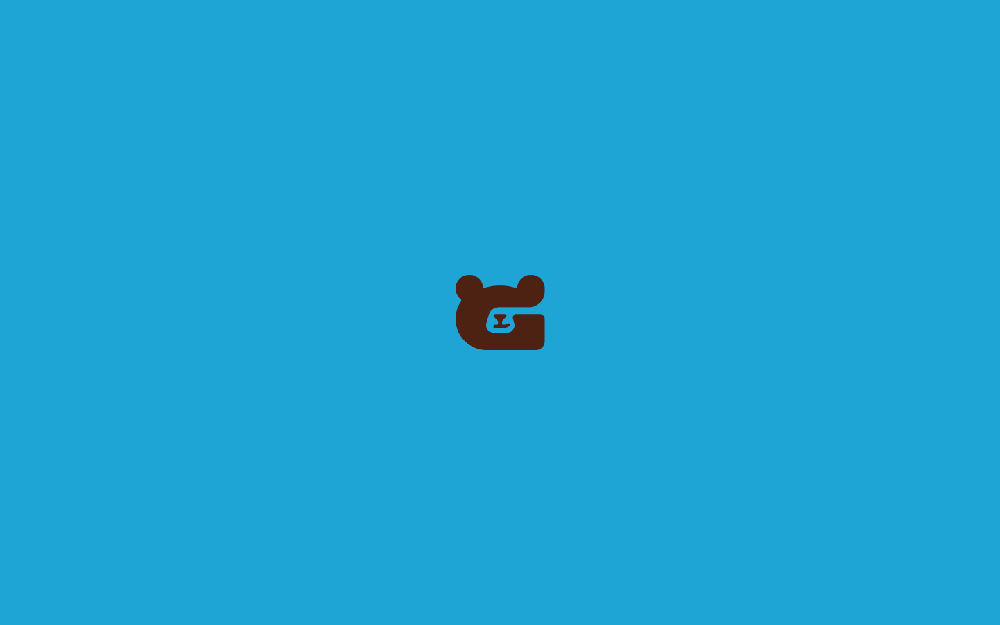

Geladin's
restaurante
brasil
Geladin's nasce da mistura entre afeto, sabor e memória afetiva
Inspirada nos clássicos geladinhos que marcaram a infância de tantas pessoas, a marca transforma essa experiência em algo contemporâneo, divertido e visualmente inesquecível.
O projeto foi construído para transmitir proximidade desde o primeiro olhar. O ursinho criado como mascote se torna o coração da identidade, trazendo carisma, leveza e uma presença extremamente reconhecível. Mais do que um personagem, ele funciona como símbolo emocional da marca, aproximando o público da experiência de forma espontânea e acolhedora.

A direção visual aposta em uma estética simples, forte e altamente memorável. A paleta reduzida em azul, marrom e tons claros inspirados no gelo cria uma combinação marcante, refrescante e proprietária, capaz de gerar reconhecimento imediato em qualquer aplicação. O contraste entre as cores reforça tanto a sensação de cremosidade quanto o universo lúdico e divertido da marca.
A tipografia exclusiva desenhada para o projeto complementa essa personalidade com formas robustas, arredondadas e cheias de ritmo. Cada letra ajuda a construir uma linguagem visual própria, trazendo unidade e autenticidade para todo o sistema gráfico.

O resultado é uma identidade flexível, expressiva e cheia de vida. Patterns, selos, aplicações e elementos gráficos foram desenvolvidos para expandir a presença da marca de maneira consistente em embalagens, uniformes, carrinhos, redes sociais e materiais promocionais.
Geladins equilibra nostalgia e contemporaneidade sem parecer presa ao passado. A marca resgata a sensação divertida dos verões de infância, mas traduz tudo isso através de uma linguagem moderna, estratégica e pronta para ocupar espaço de forma marcante no universo do food branding.
Uma identidade criada para ser lembrada com o mesmo carinho do primeiro geladinho comprado na rua em um dia quente de verão.




